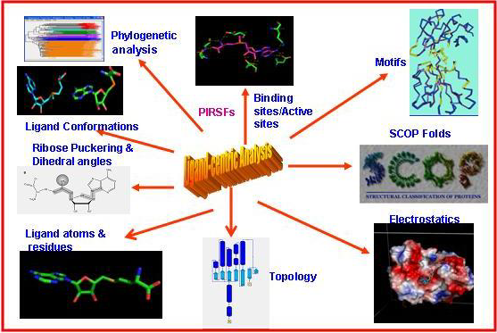

Heme Protein
A hemeprotein (or haemprotein; also hemoprotein or haemoprotein), or heme protein, is a metalloprotein containing a heme prosthetic group- an organic compound that allows a protein to carry out a function that it cannot do alone. Heme remains bound to the protein permanently, either covalently or noncovalently bound or both.
The heme contains a reduced iron atom, Fe2+ in the center of a highly hydrophobic, planar, porphyrin ring. The iron has six possible coordination bonds.
The porphyrin ring has 4 nitrogen atoms that bind to the iron, leaving two other coordination positions of the iron available for bonding to the histidine
of the protein and a divalent atom.
Hemeproteins probably evolved to incorporate the iron (Fe) atom contained within the protoporphyrin IX ring of heme into
proteins. As it makes hemeproteins responsive to molecules that can bind divalent iron (Fe), this strategy has been maintained throughout evolution as it plays
crucial physiological functions. Oxygen (O2) nitric oxide (NO), carbon monoxide (CO) and hydrogen sulfide (H2S) binds to the iron atom in heme proteins.
Once bound to the prosthetic heme groups, these molecules can modulate the activity/function of those hemeproteins, affording signal transduction. Therefore,
when produced in biologic systems (cells),these gaseous molecules are referred to as gasotransmitters.Because of their diverse range of biological functions,
the structural and functional characterizations of hemeproteins are the most studied classes of biomolecules. Data on heme protein structure and function has
been aggregated into The Heme Protein Database (HPD), a secondary database to the Protein Data Bank.
